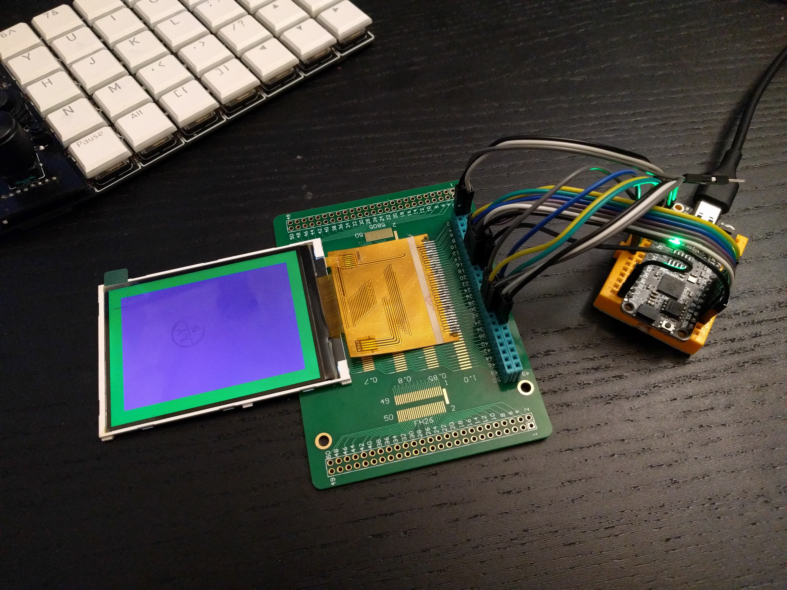
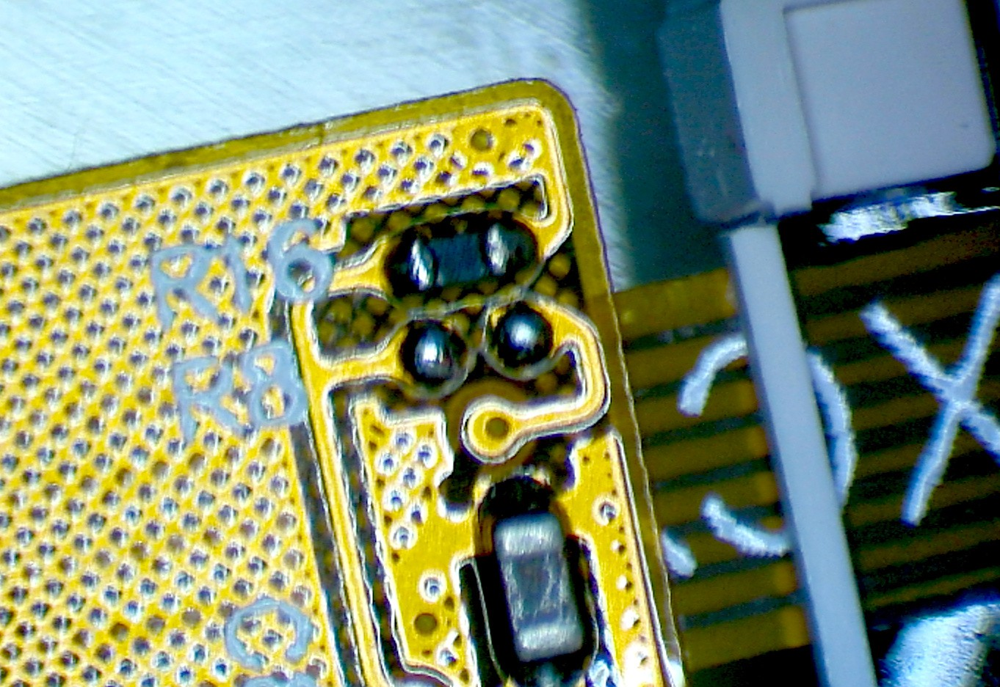
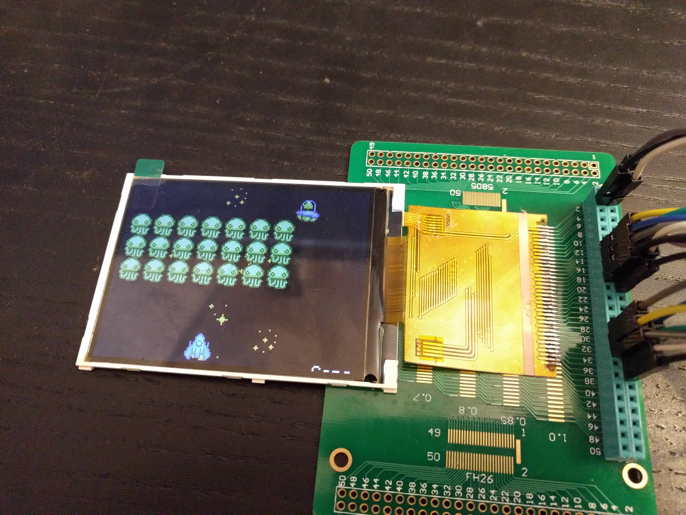

Parallel Bus¶
Published on 2021-03-25 in µGame S3.
The displays arrived a few days ago, but I really didn’t have the energy to get them working until today. Yesterday I found my Universal Display Breakout Board™ and soldered the display to it. Today I connected a Feather RP2040 to it, and tried to get it working. Turns out there are a couple of tricks to it.
First of all, the IM0-3 pins are not broken out, so there is no way to switch the interface mode, and it comes in the 16-bit parallel mode by default. But wait a minute, the Aliexpress page said it was compatible with 8-bit mode, so how? I asked the seller, but before I got the answer, I noticed this little note on the screenshots of the datasheet at the product page:
That, I assume, explains, in perfectly clear Chinese, how to switch the iterface modes. It even tells you which pins to use in each mode! I mean, probably. I don’t read Chinese. But let’s look closer at the display:
Ah-ha! The aforementioned R16 and R8, and only one of them is populated. And that is a 0Ω resistor, if I’m not mistaken. So I only need to move it from R16 to R8 and that should switch the mode. Easy. Later the seller confirmed this, I assume this is direct translation of the above note:
When R16 connect resistance, it is 16-bit interface, DB15-DB0 are useful (default 16-bit)\ When R8 connect resistor, it is 8-bit interface, DB15-DB8 are usefulWith that out of the way, there is one more trick. Have you noticed how it tells you that DB15-DB8 should be used in 8-bit mode? But the datasheet for ILI9341 says DB0-DB7... I wonder why they specified those pins in reverse order, hmm... Yes, of course the pins are reversed. What is labeled as DB15 is actually DB0, and so on. I feel really smart for figuring it out at first try, before I connected the wires.
But no worries, I immediately felt less smart for making stupid off- by-one errors connecting the wires, so that’s balanced.
The final trick relates to the backlight LEDs. The pinout has two pins marked as LED-A, and five pins marked as LED-1 to LED-5. So logically, the two pins are common anodes (doubled so that you can put more current through the pins), and each of the five LED pins is the cathode of one of the five backlight LEDs. So in the final design, we will need a MOSFET on the anodes, and five resistors on the cathodes. Well, closer examination of the traces tells a different story. Both LED-A pins merge into a single trace — that is somewhat expected, even though that trace is no wider than others. But also all the cathodes merge into a single thin trace, and then split again near the display where the backlight is connected! That is some bad practice there, but at least that saves my four resistors, I suppose.
With everything connected, a little bit of code:\
import displayio
import board
_INIT_SEQUENCE = (
b"\x01\x80\x80" # Software reset then delay 0x80 (128ms)
b"\xEF\x03\x03\x80\x02"
b"\xCF\x03\x00\xC1\x30"
b"\xED\x04\x64\x03\x12\x81"
b"\xE8\x03\x85\x00\x78"
b"\xCB\x05\x39\x2C\x00\x34\x02"
b"\xF7\x01\x20"
b"\xEA\x02\x00\x00"
b"\xc0\x01\x23" # Power control VRH[5:0]
b"\xc1\x01\x10" # Power control SAP[2:0];BT[3:0]
b"\xc5\x02\x3e\x28" # VCM control
b"\xc7\x01\x86" # VCM control2
b"\x36\x01\x38" # Memory Access Control
b"\x37\x01\x00" # Vertical scroll zero
b"\x3a\x01\x55" # COLMOD: Pixel Format Set
b"\xb1\x02\x00\x18" # Frame Rate Control (In Normal Mode/Full Colors)
b"\xb6\x03\x08\x82\x27" # Display Function Control
b"\xF2\x01\x00" # 3Gamma Function Disable
b"\x26\x01\x01" # Gamma curve selected
b"\xe0\x0f\x0F\x31\x2B\x0C\x0E\x08\x4E\xF1\x37\x07\x10\x03\x0E\x09\x00" # Set Gamma
b"\xe1\x0f\x00\x0E\x14\x03\x11\x07\x31\xC1\x48\x08\x0F\x0C\x31\x36\x0F" # Set Gamma
b"\x11\x80\x78" # Exit Sleep then delay 0x78 (120ms)
b"\x29\x80\x78" # Display on then delay 0x78 (120ms)
)
displayio.release_displays()
bus = displayio.ParallelBus(
data0=board.D4,
command=board.A1,
chip_select=board.A0,
write=board.A2,
read=board.A3,
reset=board.D24,
frequency=62_500_000,
)
display = displayio.Display(bus, _INIT_SEQUENCE, width=320, height=240)
And the display is working. I even put the Vacuum Invaders on it to see how fast it is.
And here is a disappointment. Even with a parallel interface at supposed 62Mhz, the refresh of the display is visibly slower than the ST7735 with 40MHz SPI. Sure, there are four times more pixels there, but it still doesn’t seem right. I suspect that it is actually 31MHz, and that there are some considerable pauses in the data being sent, because that’s the only thing I can think of that would explain the slow refresh and bad tearing. Oh well, I suppose I will get back to SPI. I will test it on another ILI9341 display, with a smaller diagonal, because I have it at hand.